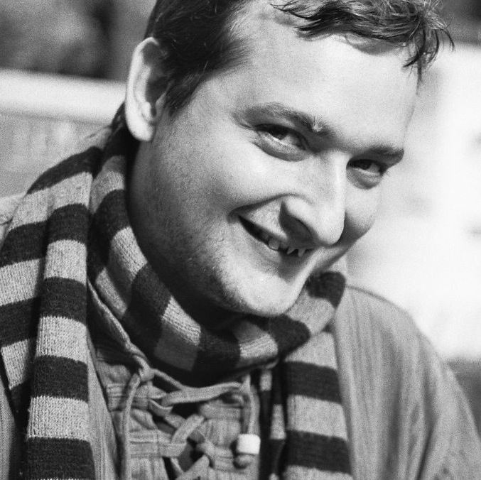

About Me
Hello!
My name is Martin Häcker - welcome to my blog!

Here I write unregularly about my thoughts and interests. For example about software, my hobbies, Liquid Democrycy or other projects.
If you have professional interest in me, please have a look at my Xing and LinkedIn profiles. For more details, please see my Curiculum Vitae and my profile.
I work for SNTL-Publishing as the lead full stack developer, lead DevOps specialist and software architect. Much of my work is focused on the predictive learn analytics tool yeepa
In my free time, I like to play Go (Baduk/ Weiqi), love to sing in a Choir and dabble with enthusiasm in Bouldering, Kiting, paragliding, juggling and Billard
Imprint
This webseite is licensed under a CC-BY-SA Lizenz and is written by:
Martin Häcker
Maßmannstraße 5
12163 Berlin
spamfaenger ÄT gmx.de
Privacy Policy
This blog is operated by Martin Häcker (for contact details see imprint). I do not collect any data about readers of this page. The responsible authority is the Berliner Beauftragte für Datenschutz und Informationsfreiheit.
Colophon
This page is built with Lektor and is responsively styled with Bootstrap. I am proud to not use JavaScript where possible and instead use modern CSS.. Old browsers might have difficulties with it. Go update.
All content is - where possible - written in Markdown. On my MacBookPro I write content and Code in TextMate
Previous iterations of this website have run on a customised Trac instance. Before that, it was a hand coded HTML page.